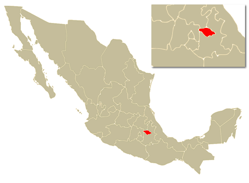

Chichén ItzáYucatán
Chichén ItzáYucatánTlaxcala
Municipios
Tlaxcala y Tenochtitlán surgieron en el mundo indígena con dos concepciones políticas diferentes, las cuales chocarían inevitablemente. Tlaxcala desarrolló un sistema de ciudades-estados que conformaron una República, mientras que México-Tenochtitlán se convirtió en imperio. El mito de Quetzalcóatl fue común a los pueblos de origen náhuatl, entre ellos los Tlaxcaltecas. Según el historiador más antiguo de Tlaxcala, Diego de Muñoz Camargo, Quetzalcóatl, dentro de la concepción religiosa de los tlaxcaltecas, era hijo de su dios Camaxtli, quien desposó a Cuatlicue en su peregrinar por las provincias de Culhuacán, Teotlacochcalco y Teohuitznahuac. El vaticinio de su regreso, coincide con la aparición de las primeras expediciones españolas y se convertiría en una catástrofe con la llegada de Hernán Cortés.
 La noche que nadie duerme, Huamantla.
La noche que nadie duerme, Huamantla. Cuando Cortés solicitó la venia del Senado tlaxcalteca para transitar por su territorio rumbo a Tenochtitlán, mediante la embajada de cuatro principales cempoaltecas, la mayor oposición a dejarlos pasar provino del senador Xicohténcatl Axayacatzin de Tizatlán, quién gobernaba el señorío con su padre Xicohténcatl-Huehuétl. Cortés penetró al territorio de Tlaxcala por la cañada que hoy se conoce como La Mancera. En Tecoantzinco tuvieron su primer enfrentamiento los españoles con las huestes del señor de Tecoac. El 2 de septiembre de 1519, Xicohténcatl enfrentó a Cortés en el desfiladero de Tecoantzinco, con resultados adversos. Al día siguiente combatió en los llanos del mismo lugar, sin que viesen coronados sus esfuerzos las armas tlaxcaltecas. La deserción de las divisiones de Ocotelulco y las de Tepeticpac, por las intrigas de Maxixcatzin, disminuyó las fuerzas del Xicohténcatl quién, pensando que los hombres rubios ganaban con el apoyo del sol, intentó vencerlos en una justa nocturna, que también le fue adversa.
El Senado, al conocer esta última derrota, optó por ofrecer la paz a Cortés ordenando a Xicohténcatl Axayacatzin suspender las hostilidades. La paz se hizo en el cerro de Tzompantepec el 7 de septiembre de 1519, concertada en términos de una alianza amistosa entre dos naciones. Si bien los tlaxcaltecas aceptaron el reconocimiento de vasallaje respecto de Carlos V, soberano de España, Cortés les ofreció participación en la dominación de Tenochtitlán, además de respetar la autonomía y las formas de gobierno propios de la República. A cambio, los tlaxcaltecas adoptarían la religión católica como única y verdadera, y ayudarían en la conquista y pacificación. Una vez consolidada la ocupación de la Nueva España, la Colonia fue dividida territorialmente en cinco provincias mayores, siendo una de ellas la de Tlaxcala. La Provincia era gobernada por un alcalde mayor, del que dependían los cuatro senadores de Tlaxcala.
 Santuario de las luciérnagas, Nanacamilpa.
Santuario de las luciérnagas, Nanacamilpa.ueron numerosos los tlaxcaltecas que participaron en el movimiento de Independencia al lado de los ejércitos de Hidalgo, Morelos y Guerrero. Entre los tlaxcaltecas que se incorporaron a las fuerzas insurgentes se recuerda a Miguel Serrano, Juan Cortés, Antonio Arroyo y Vicente Gómez. En esta pléyade, sobresale la figura del cura Mariano Matamoros, si bien nacido en la ciudad de México, fue hijo de José Matamoros y de Mariana Guridi, originarios de Ixtacuixtla, Tlaxcala. Las acciones bélicas entre Insurgentes y realistas no fueron mayores por la presencia de la guarnición realista de Puebla, que inhibió los enfrentamientos con los insurgentes.
Estado de Tlaxcala
| Municipio | |
| Capital | Tlaxcala |
| Coord. | Lat.Long. |
| Municipios | #Mun |
| Mayor Ciudad | Vicente Guerrero |
| Huso Horario | -6 |
| Verano | -5 |
| Abrev. | Tlax. |
| Mas Herramientas | |
| Clima | |
| Tlaxcala Weather | |
| Superficie | |
| Total | 4 016 Km |
| 31 en la Republica | |
| Población | |
| Total | 1 169 825 |
| 27 en la República | |
| Gentilicio | Tlaxcalteca |
| Claves Larga Distancia | |
| Mapa de Estado | |
| Carreteras | |
| Youtube | |
| Información valiosa | |
| Embajadas Extranjeras | |
| Embajadas de México | |
| Servicios Turiisticos: |